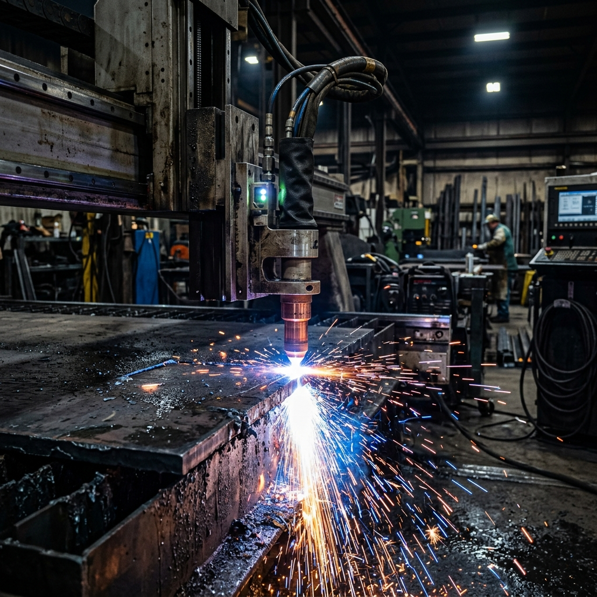
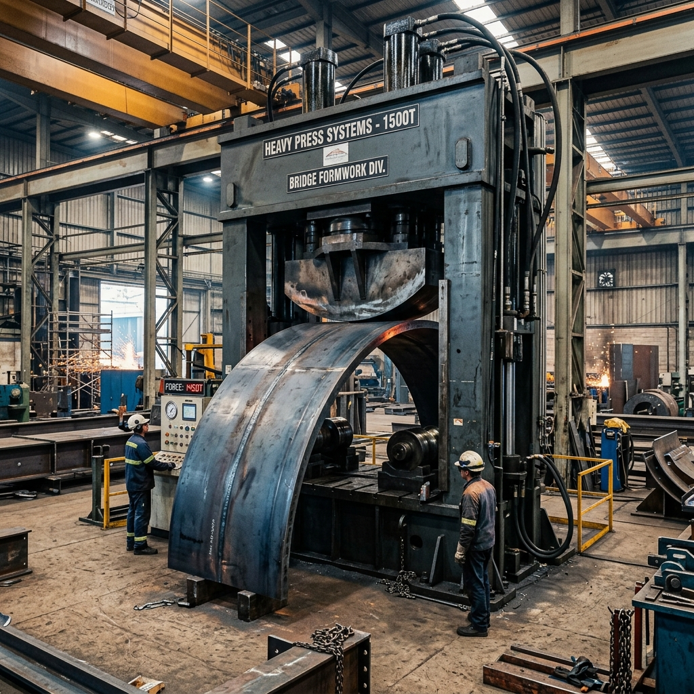
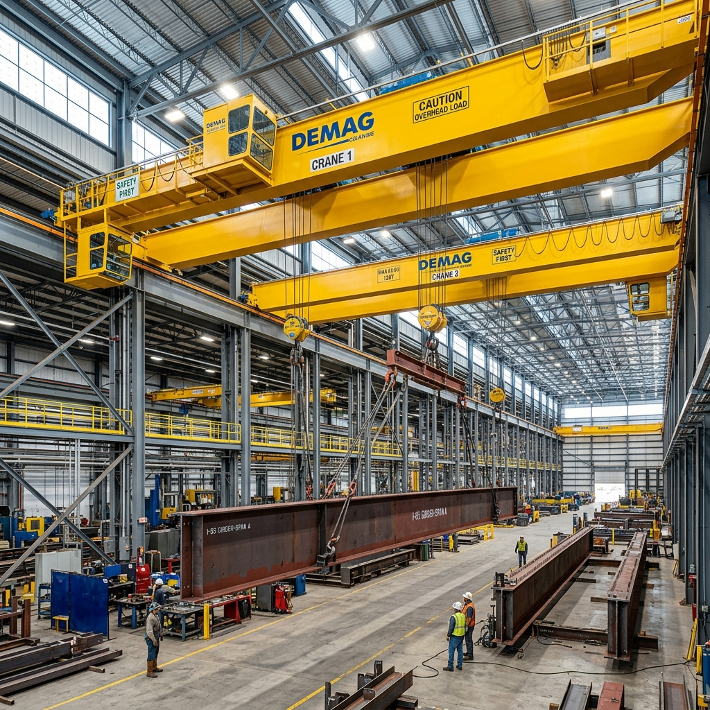
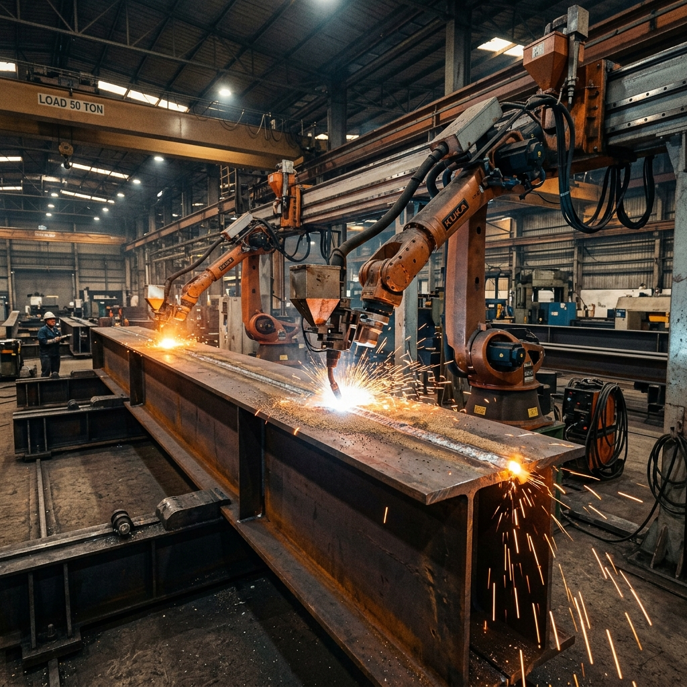

Core Manufacturing Capabilities
Combining five decades of bridge engineering heritage with state-of-the-art CNC automation, heavy hydraulic presses, and high-precision welding lines.

Cutting is the Primary requirement of Engineering Industry. We have 5 nos. of CNC Profile Cutting Machines, CNC Shearing Machines, CNC Power Presses, CNC Section Cutting Machine and other conventional machines. With the use of these CNC machines, profile cutting is more precise and fast.

Forming is the Major activity in the manufacturing of Formworks. For forming we have multiple Hydraulic Presses and Plate Bending machines. The highlight being the Hydraulic Press with the bending capacity of 5.0 M long piece in single stroke. We use various dies for 3D Bending required for complex Pier and Piercap Moulds.

Handling is the Heart of Engineering industry. We are equipped with 45+ Nos. of EOT Cranes each being 10 Ton to 25 Ton Lifting Capacity across all 5 covered manufacturing bays, allowing seamless, safe movement of heavy bridge girders and launching gantry assemblies.

Welding being the Core requirement of Engineering industry, is done using Submerged Arc welding (SAW) or MIG/Co2 Welding (FCAW) with Qualified Welders. This Welding facility increases productivity giving reliable and superior Welding Quality audited via strict ultrasonic NDT testing.

AUTOMATIC STEEL GIRDER MANUFACTURING FACILITY
We have state-of-the-art Automatic Steel Girder Manufacturing Facilities. The machine is fully automatic for the fitment of the Steel Girder with high-precision sensors and fully automated welding. We can produce up to 750 MT of heavy bridge steel girders per month with zero human error and unmatched structural precision.